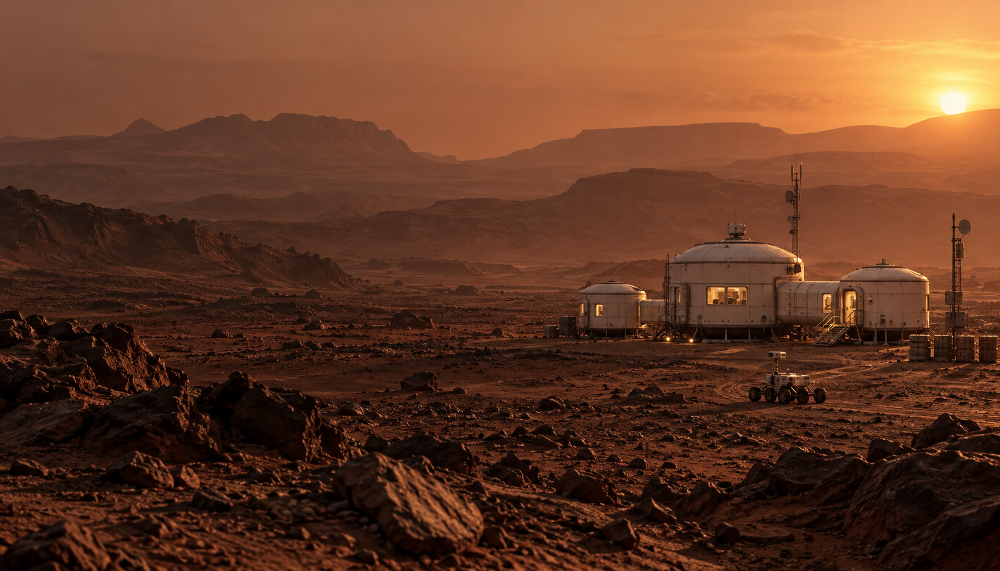
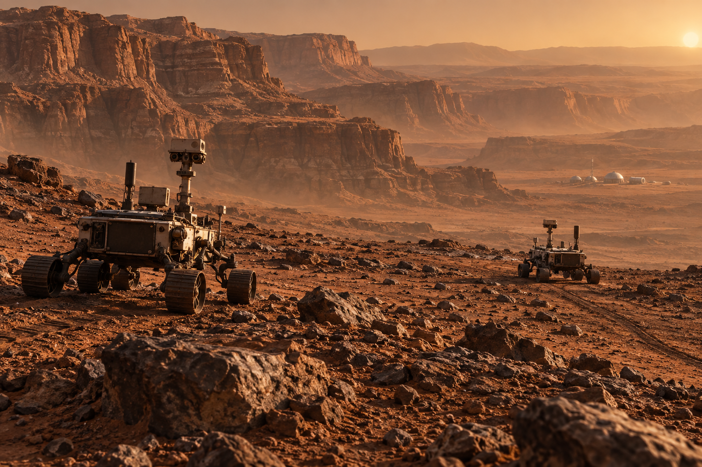
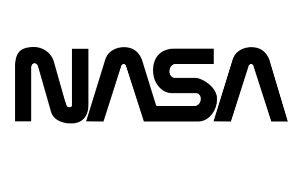

Mission 01
Keep the
Colony Supplied
The outpost is established. Its future depends on what happens next.
Open mission briefingOpen call for ideas
A landing is only the beginning. Help shape a settlement that can sustain itself, adapt, and grow.
Explore the challenges01 —
The vision
The ambition is clear: establish a lasting human presence on another world.
How will we find what we need? How will we keep essential systems running? How will we make limited resources go further?
No single team has every answer. Bring yours.
02 —
Open missions
Develop your solution. Test it under mission constraints.
Put it up against competing teams.

Mission 01
The outpost is established. Its future depends on what happens next.
Open mission briefing
Mission 02
One successful mission is only the beginning. Build a strategy that holds up across five scenarios.
Open mission briefingInspired by the pioneers of space exploration
